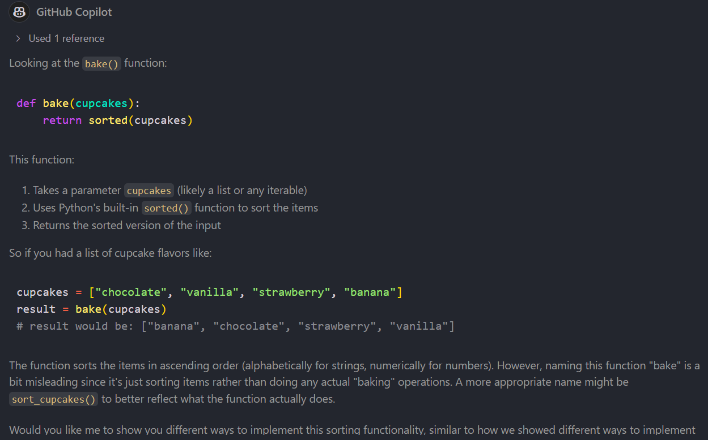

🧠 The Mindset Shift
Welcome to the most important ingredient in your Coding & Cupcakes journey: your mindset! 🍰
GitHub Copilot is a powerful tool—but like any good kitchen assistant, it works best when you’re in charge. This section is all about helping you shift from passive coding to active learning.
🍩 Copilot is NOT your baker
Let’s get this straight:
❌ Copilot is not here to bake the cupcakes for you.
✅ Copilot is here to help you bake better cupcakes.
Think of it like this: - You bring the creativity, curiosity, and control. - Copilot brings suggestions, explanations, and shortcuts.
🧁 What is “Vibe Coding”? And why avoid it?
Vibe Coding is when you let Copilot write code without understanding it. You vibe with the suggestions, accept them blindly, and hope for the best.
🚫 This leads to: - Code you can’t debug - Features you can’t explain - Skills you don’t develop
Instead, we want to learn actively.
🍬 Examples of Healthy Copilot Use
1. Ask Copilot to explain code
# What does this function do?
def bake(cupcakes):
return sorted(cupcakes)

# Method 1: Using Python's built-in sorted() function
def sort_cupcakes_builtin(cupcakes):
return sorted(cupcakes)
# Method 2: Using bubble sort implementation
def sort_cupcakes_bubble(cupcakes):
cupcakes = cupcakes.copy() # Make a copy to avoid modifying original
n = len(cupcakes)
for i in range(n):
for j in range(0, n - i - 1):
if cupcakes[j] > cupcakes[j + 1]:
cupcakes[j], cupcakes[j + 1] = cupcakes[j + 1], cupcakes[j]
return cupcakes
# Method 3: Using list.sort() method
def sort_cupcakes_list(cupcakes):
result = cupcakes.copy() # Make a copy to avoid modifying original
result.sort()
return result
# Method 4: Using sorted() with a key function for case-insensitive sorting
def sort_cupcakes_insensitive(cupcakes):
return sorted(cupcakes, key=str.lower)
# Method 5: Using sorted() with reverse order (descending)
def sort_cupcakes_reverse(cupcakes):
return sorted(cupcakes, reverse=True)
# Test all implementations
if __name__ == "__main__":
test_cupcakes = ["Vanilla", "chocolate", "Strawberry", "banana"]
print("Sorting cupcake flavors:")
print(f"1. Built-in sorted(): {sort_cupcakes_builtin(test_cupcakes)}")
print(f"2. Bubble sort: {sort_cupcakes_bubble(test_cupcakes)}")
print(f"3. List sort method: {sort_cupcakes_list(test_cupcakes)}")
print(f"4. Case-insensitive: {sort_cupcakes_insensitive(test_cupcakes)}")
print(f"5. Reverse order: {sort_cupcakes_reverse(test_cupcakes)}")